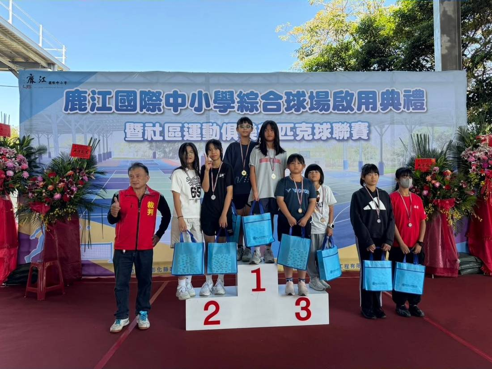
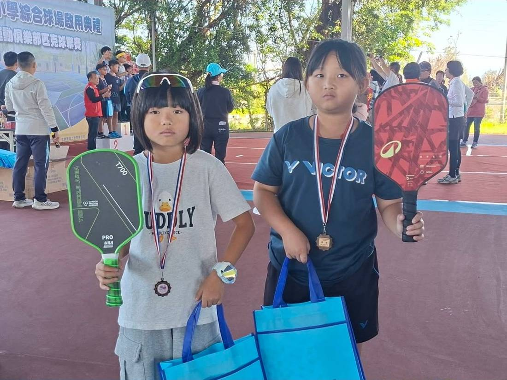
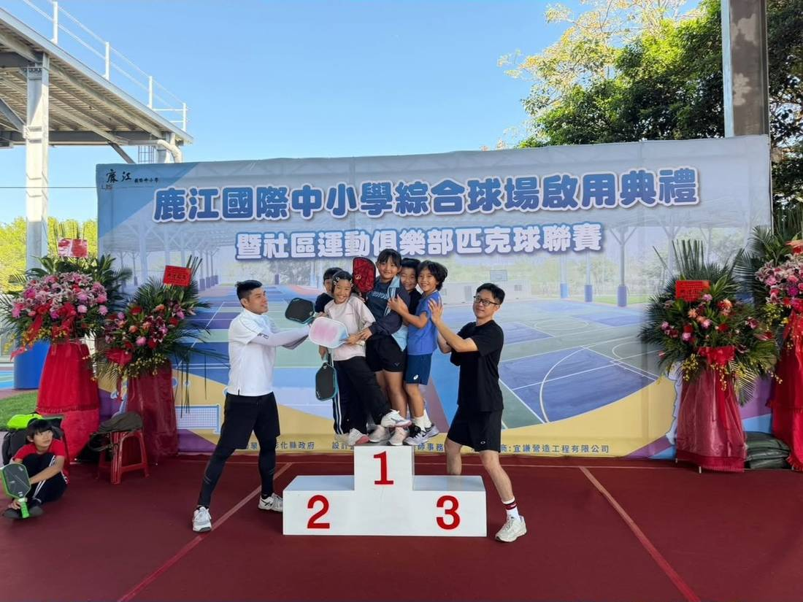
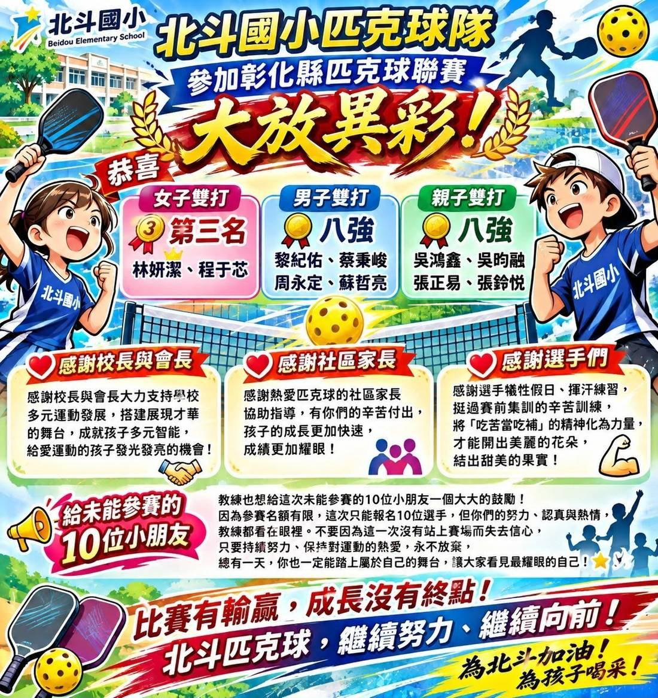

Paddles Up, Medals Home匹克球隊縣聯賽大放異彩
Our pickleball team shone at the Changhua County Pickleball League. The girls' doubles pair of 林妍潔 and 程于芯 took third place, while two boys' doubles teams (黎紀佑 and 蔡秉峻; 周永定 and 蘇哲亮) and the parent–child pairs of 吳鴻鑫 and 吳昀融 and of 張正易 and 張鈴悅 all reached the quarter-finals. Behind every medal is a lot of quiet support: thank you to the principal and the PTA president for backing a wider range of sports, to the community parents who love the game and volunteered to coach, and above all to the players, who gave up weekends and trained through round after round of practice. To the ten teammates who could not compete this time because places were limited — your coach wants you to know your effort has been seen. Keep playing, keep believing, and your turn on court will come. Matches have winners and losers; growing up has no finish line.
恭喜北斗國小匹克球隊在彰化縣匹克球聯賽中大放異彩！女子雙打林妍潔、程于芯榮獲第三名；男子雙打黎紀佑、蔡秉峻與周永定、蘇哲亮，以及親子雙打吳鴻鑫、吳昀融與張正易、張鈴悅，都闖進八強。每一份榮耀的背後，都有許多默默付出的力量：感謝校長與會長大力支持，讓學校能推動多元運動發展；感謝熱愛匹克球的社區家長無私協助指導；更感謝每一位犧牲假日、揮汗練習的選手，用堅持克服挑戰，才能在賽場上綻放光芒。也想給這次因名額有限而未能參賽的 10 位小朋友一個大大的擁抱——沒有站上賽場，不代表努力沒被看見，請繼續保持熱情，屬於你們的舞台一定會到來。比賽有輸贏，成長沒有終點！
📖 Words to Learn · 單字學習8 words · 配對遊戲
Tap 🔊 to listen · 點喇叭聽發音
The two girls won third place in doubles.兩位女生在雙打中拿到第三名。
Our team reached the quarter-final.我們的隊伍打進了八強。
Some parents volunteered to coach the players.有些家長自願來指導選手。
Persistence helped them win the medal.毅力幫助他們贏得獎牌。
They sacrificed their weekends to practice.他們犧牲週末來練習。
Every child deserves an opportunity to shine.每個孩子都值得有發光的機會。
Only some players could compete this time.這次只有部分選手能參賽。
Let’s give them a big round of applause.讓我們給他們熱烈的掌聲。
Matched 配對成功：0 / 8